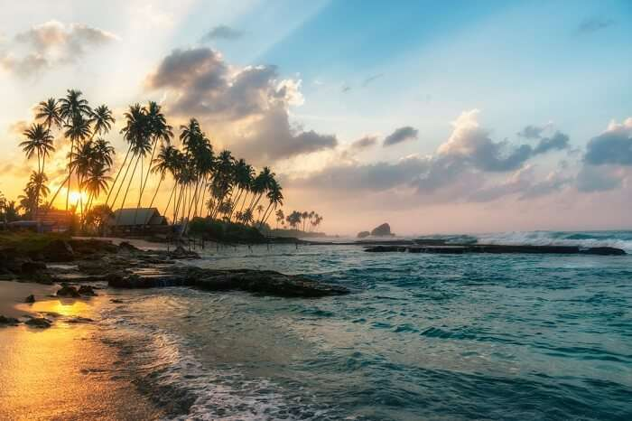
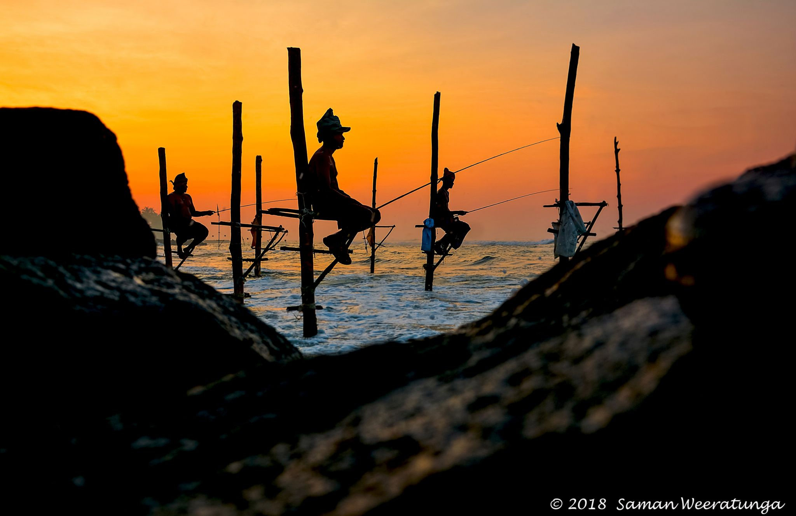

Koggala is a small coastal town, situated at the edge of a lagoon on the south coast of Sri Lanka, located in Galle District, Southern Province, Sri Lanka, governed by an Urban Council. Koggala is bounded on one side by a reef, and on the other by a large lake, Koggala Lake, into which the numerous tributaries of the Koggala Oya drain. It is approximately 139 kilometres (86 mi) south of Colombo and is situated at an elevation of 3 metres (9.8 ft) above the sea level. Koggala has one of the longest beaches in Sri Lanka, and is located in close proximity to the popular tourist resort of Unawatuna, Koggala in comparison is relatively uncluttered as a tourist destination and mostly unexplored. Koggala was significantly affected by the tsunami caused by the 2004 Indian Ocean earthquake, where the waters measured 9.3 metres (31 ft) high.[1]
It is the birthplace of noted Sri Lankan author Martin Wickramasinghe and there is a museum, Martin Wickramasinghe Folk Art Museum, dedicated to his arts and popular traditions in the town. Approximately 5 kilometres (3.1 mi) east of Koggala is the Kataluva Purvarama Maha Viharaya temple, which was originally built in the 13th century and has some late 19th century additions. The temple is renowned for its Kandyan-style paintings in the main shrine, dating from the late 19th century. The paintings of musicians, dancers and European figures illustrates an interesting piece of social history. Some of the Jatake tales (episodes from the Buddha's series of 550 previous lives) are painted here, and purportedly are 200 years old. There are also some cameo-style paintings of Queen Victoria and the Queen Mother, done in gratitude of Queen Victoria's role in ensuring the free practice of Buddhism outlined in the Kandyan capitulation of Lanka in 1815.
 